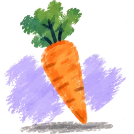
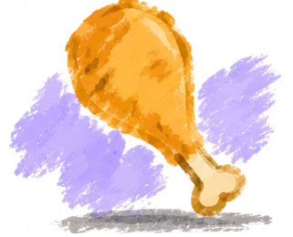
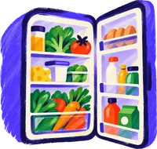

Menu
Semaine du 19 au 25 octobre · 9 créneaux sur 14 remplis
19 – 25 oct.
Cette semaine
Lundi19
Mardi20
Soir
Gnocchi crème de courgette
Mercredi21
MidiReste
Gnocchi crème de courgette
de mardi soir
Soir
Salade chèvre chaud
Jeudi22
Midi
One pot butternut
Soir
Soupe œufs
Vendredi23
MidiReste
One pot butternut
de jeudi midi
Soir
Burger poulet et patate douce
Samedi24
Midi
Picnic plage
Repas simple
Dimanche25
- Légumes
- Féculents
- Viandes et poissons
- Produits laitiers
- Légumineuses
- Fruits
- Absent du jour
Bilan de la semaine
Une semaine bien garnie en légumes.


{{ num }}
{{ label }}
Nouvelles recettes
2
Ingrédients à classer
Repas différents
7
Restes
2

Semaine remplie
9/14créneaux
Pas cuisinées depuis longtemps
De quoi varier la semaine prochaine.
Curry de lentillesIl y a 9 semaines
Quiche poireauxIl y a 7 semaines
Pâtes carbonaraIl y a 6 semaines
Risotto champignonsIl y a 5 semaines
Chili con carneIl y a 5 semaines
Gratin dauphinoisIl y a 4 semaines